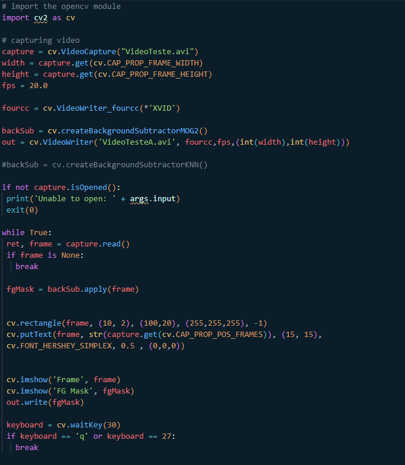
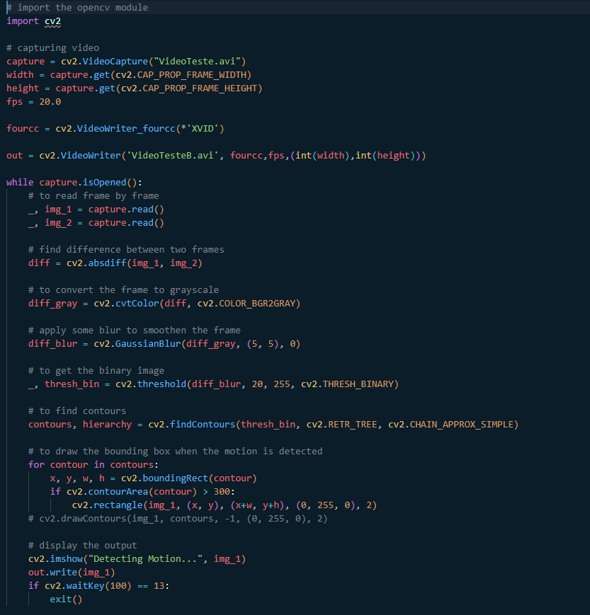
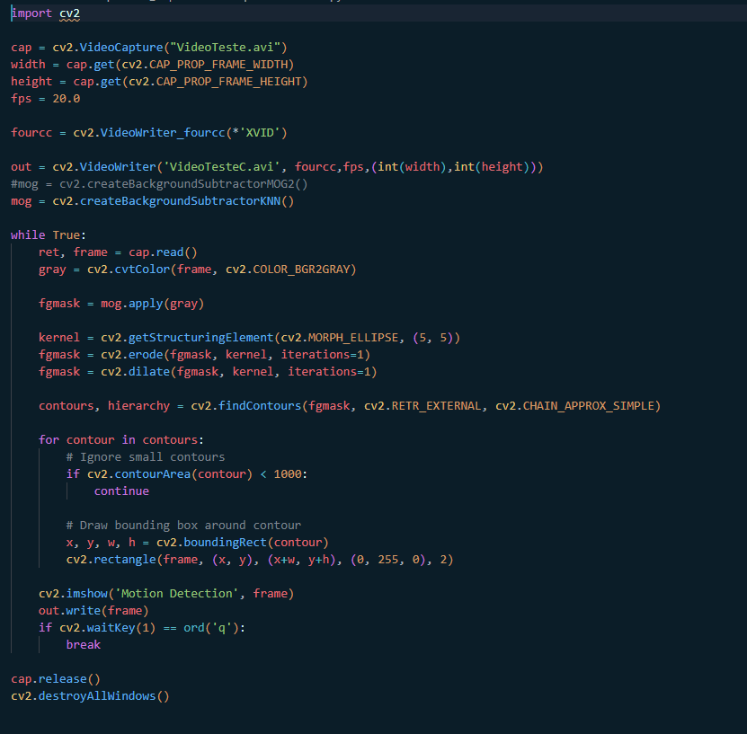
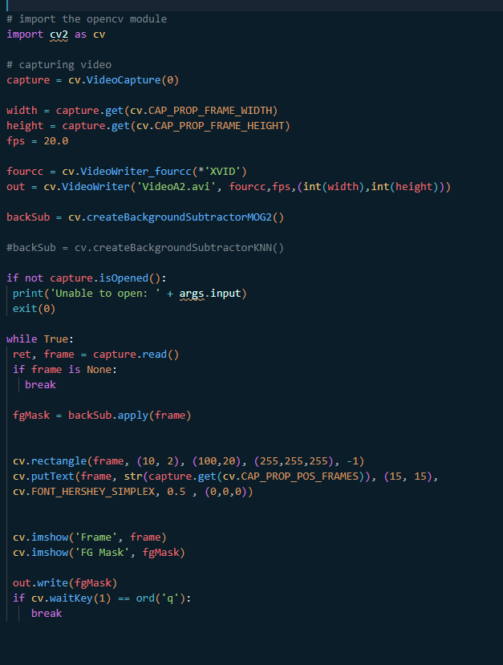
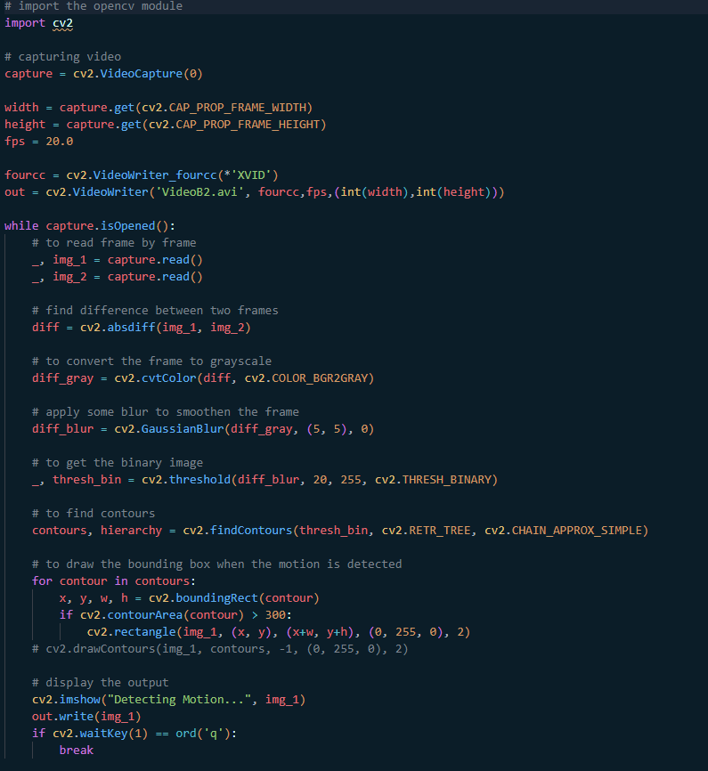
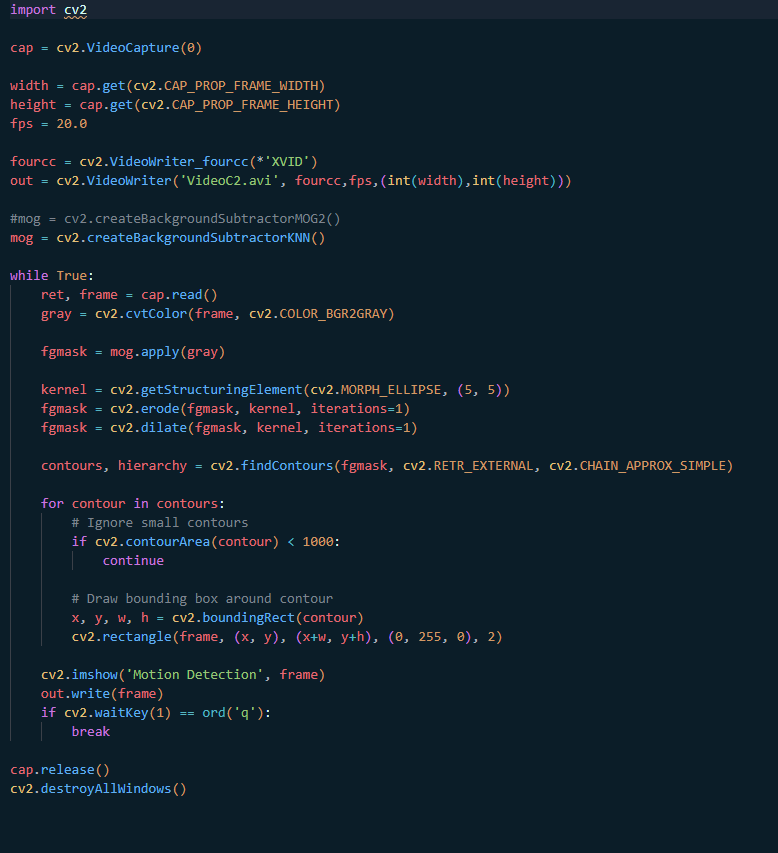

Introdução
O experimento a seguir busca estudar e explorar a teoria da detecção de movimento em cenários por câmera, abordando também sua aplicação prática através de bibliotecas do OpenCV.
Objetivos
- Compreender a teoria da detecção de movimento e seus diferentes métodos
- Aplicar o conhecimento na prática com OpenCV
- Experimentar outras funcionalidades
Fundamentos básicos
A subtração de fundo, disponível *aqui* é uma técnica utilizada para gerar uma máscara de primeiro plano (ou seja, uma imagem binária contendo os pixels pertencentes a objetos em movimento na cena) usando câmeras estáticas. O método calcula a máscara de fundo realizando uma subtração entre o quadro atual e um modelo de fundo, contendo a parte estática da cena ou, de forma mais geral, tudo o que pode ser considerado como fundo dadas as características da cena observada.
Para a detecção de movimento foram estudados dois métodos, o primeiro é a *substituição frame-a-frame*, que consiste em pegar dois quadros do vídeo ou da webcam e encontrar a diferença entre eles.
Outro método é pela *diferença da imagem de referência*, que consiste em identificar regiões em um vídeo onde ocorreram mudanças significativas em comparação com um quadro de referência. Essas alterações podem incluir objetos entrando ou saindo da cena, objetos mudando de posição ou até mesmo alterações sutis, como uma luz trêmula. Ao identificar essas áreas de movimento, podemos analisar e responder a eventos de interesse em tempo real ou durante o pós-processamento.
Materiais e métodos
- Ubuntu
- Miniconda
- Python
- OpenCV
- Webcam
1)
Através dos programas disponíveis *aqui* e dos algoritmos de gravação de vídeo do relatório 1, foi criado este algoritmo que recebe um arquivo de vídeo e a aplica a subtração de fundo, tendo como saída um vídeo do efeito aplicado no vídeo original. Infelizmente, por algum motivo não determinado, o programa não grava a saída do vídeo, embora mostre-a.
Através dos programas disponíveis *aqui*, de modo semelhante ao anterior, foi criado um algoritmo que recebe um vídeo como entrada e aplica a detecção de movimento a ele, o que foi feito usando a função cv2.absdiff(). Após isso, é realizada a suavização da imagem com o cv2.GaussianBlur(), é encontrado os contornos com a função cv2.threshold(), encontrar os contornos com cv2.findContours() e desenhar um retângulo em volta deles com cv2.boundingRect().
Através dos programas disponíveis *aqui*, de modo semelhante ao anterior, foi criado um algoritmo que recebe um vídeo como entrada e aplica a detecção de movimento a ele pelo método da detecção por diferença da imagem de referência, onde inicialmente é capturado o vídeo da webcam com a função VideoCapture, convertido os quadros em tons de cinza com cvtColor, aplicado a subtração do plano de fundo com um algoritmo (disponibilizado pelo site), aplicado as operações morfológicas, onde é usado getStructuringElement para criar uma máscara e aplicar os filtros e, por fim, é desenhado as caixas limitadoras com findContours e boundingRect para achar os contornos e calcular suas caixas.
2)
Aqui, de modo semelhante ao primeiro item da questão anterior, foi criado este algoritmo que recebe uma entrada de vídeo e a aplica a subtração de fundo em tempo real, tendo como saída um vídeo do efeito aplicado no vídeo original. Para tal foram utilizados os comandos presentes no relatório 1 para captura da entrada de vídeo e a gravação da mesma. Por algum motivo este programa também salva um arquivo de vídeo corrompido para a máscara.
Aqui, de modo semelhante ao segundo item da questão anterior, foi criado um algoritmo que recebe uma entrada de vídeo e aplica a detecção de movimento por subtração de fundo a ele em tempo real. Para tal foram utilizados os comandos presentes no relatório 1 para captura da entrada de vídeo e a gravação da mesma.
Aqui, de modo semelhante ao terceiro item da questão anterior, foi criado um algoritmo que recebe uma entrada de vídeo e aplica a detecção de movimento por diferença da imagem de referência a ele em tempo real. Para tal foram utilizados os comandos presentes no relatório 1 para captura da entrada de vídeo e a gravação da mesma.
Resultados e análise
1)
Nesse resultado com detecção de movimento por subtração de fundo é possível notar o bom funcionamento do programa, embora ele detecte muitas alterações em um mesmo objeto.
Aqui temos o mesmo vídeo porém com a detecção por diferença da imagem de referência, onde é possível notar que as caixas são mais substanciais na detecção de um objeto como um todo. Ou seja, se mostrou como mais preciso que o primeiro método.
2)
Aqui temos a detecção de movimento por subtração de fundo sendo aplicada em tempo real a uma entrada de vídeo, onde é possível notar que funciona bem e que é aplicável ao cotidiano.
Aqui temos a detecção de movimento por diferença da imagem de referência sendo aplicada em tempo real, onde é possível notar, assim como nos últimos, que a detecção é mais precisa e substancial, não poluindo muito a tela e sendo mais preferível para as aplicações práticas.
Conclusões e Comentários finais
Neste laboratório foram estudados conceitos muito interessantes sobre a detecção de movimento em vídeo através de funções do OpenCV. Existem diversas aplicações para esse tipo de funcionalidade, desde a segurança até o controle e automação de processos industriais, sendo essencial para diversas dessas funções. Será também muito útil para a aplicação do nosso projeto, que consiste no aperfeiçoamento de uma câmera de vigilância.